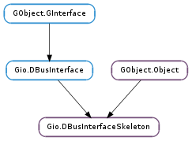

| export(connection, object_path) | |
| flush() | |
| get_connection() | |
| get_connections() | |
| get_flags() | |
| get_info() | |
| get_object_path() | |
| get_properties() | |
| has_connection(connection) | |
| set_flags(flags) | |
| unexport() | |
| unexport_from_connection(connection) |
| Name | Type | Flags | Description |
|---|---|---|---|
| g-flags | Gio.DBusInterfaceSkeletonFlags | r/w | Flags for the interface skeleton |
| Name | Parameters | Return | Description |
|---|---|---|---|
| g-authorize-method | Gio.DBusMethodInvocation | bool | Emitted when a method is invoked by a remote caller and used to determine if the method call is authorized. Note that this signal is emitted in a thread dedicated to handling the method call so handlers are allowed to perform blocking IO. This means that it is appropriate to call e.g. polkit_authority_check_authorization_sync() with the POLKIT_CHECK_AUTHORIZATION_FLAGS_ALLOW_USER_INTERACTION flag set. If False is returned then no further handlers are run and the signal handler must take a reference to invocation and finish handling the call (e.g. return an error via Gio.DBusMethodInvocation.return_error ()). Otherwise, if True is returned, signal emission continues. If no handlers return False, then the method is dispatched. If interface has an enclosing Gio.DBusObjectSkeleton, then the Gio.DBusObjectSkeleton ::authorize-method signal handlers run before the handlers for this signal. The default class handler just returns True. Please note that the common case is optimized: if no signals handlers are connected and the default class handler isn’t overridden (for both interface and the enclosing Gio.DBusObjectSkeleton, if any) and Gio.DBusInterfaceSkeleton :g-flags does not have the Gio.DBusInterfaceSkeletonFlags.HANDLE_METHOD_INVOCATIONS_IN_THREAD flags set, no dedicated thread is ever used and the call will be handled in the same thread as the object that interface belongs to was exported in. |
| Name | Type | Access |
|---|---|---|
| parent_instance | GObject.Object | r |
Bases: GObject.Object, Gio.DBusInterface
Abstract base class for D-Bus interfaces on the service side.
| Parameters: |
|
|---|---|
| Raises: | |
| Returns: | True if the interface was exported on connection, otherwise False with error set. |
| Return type: |
Exports interface_ at object_path on connection.
This can be called multiple times to export the same interface_ onto multiple connections however the object_path provided must be the same for all connections.
Use Gio.DBusInterfaceSkeleton.unexport () to unexport the object.
If interface_ has outstanding changes, request for these changes to be emitted immediately.
For example, an exported D-Bus interface may queue up property changes and emit the org.freedesktop.DBus.Properties::PropertiesChanged signal later (e.g. in an idle handler). This technique is useful for collapsing multiple property changes into one.
| Returns: | A Gio.DBusConnection or None if interface_ is not exported anywhere. Do not free, the object belongs to interface_. |
|---|---|
| Return type: | Gio.DBusConnection |
Gets the first connection that interface_ is exported on, if any.
| Returns: | A list of all the connections that interface_ is exported on. The returned list should be freed with GLib.List.free () after each element has been freed with GObject.Object.unref (). |
|---|---|
| Return type: | [Gio.DBusConnection] |
Gets a list of the connections that interface_ is exported on.
| Returns: | One or more flags from the Gio.DBusInterfaceSkeletonFlags enumeration. |
|---|---|
| Return type: | Gio.DBusInterfaceSkeletonFlags |
Gets the Gio.DBusInterfaceSkeletonFlags that describes what the behavior of interface_
| Returns: | A Gio.DBusInterfaceInfo (never None ). Do not free. |
|---|---|
| Return type: | Gio.DBusInterfaceInfo |
Gets D-Bus introspection information for the D-Bus interface implemented by interface_.
| Returns: | A string owned by interface_ or None if interface_ is not exported anywhere. Do not free, the string belongs to interface_. |
|---|---|
| Return type: | str |
Gets the object path that interface_ is exported on, if any.
| Returns: | A GLib.Variant of type ‘a{sv}’. Free with GLib.Variant.unref (). |
|---|---|
| Return type: | GLib.Variant |
Gets all D-Bus properties for interface_.
| Parameters: | connection (Gio.DBusConnection) – A Gio.DBusConnection. |
|---|---|
| Returns: | True if interface_ is exported on connection, False otherwise. |
| Return type: | bool |
Checks if interface_ is exported on connection.
| Parameters: | flags (Gio.DBusInterfaceSkeletonFlags) – Flags from the Gio.DBusInterfaceSkeletonFlags enumeration. |
|---|
Sets flags describing what the behavior of skeleton should be.
Stops exporting interface_ on all connections it is exported on.
To unexport interface_ from only a single connection, use Gio.DBusInterfaceSkeleton.unexport_from_connection ()
| Parameters: | connection (Gio.DBusConnection) – A Gio.DBusConnection. |
|---|
Stops exporting interface_ on connection.
To stop exporting on all connections the interface is exported on, use Gio.DBusInterfaceSkeleton.unexport ().